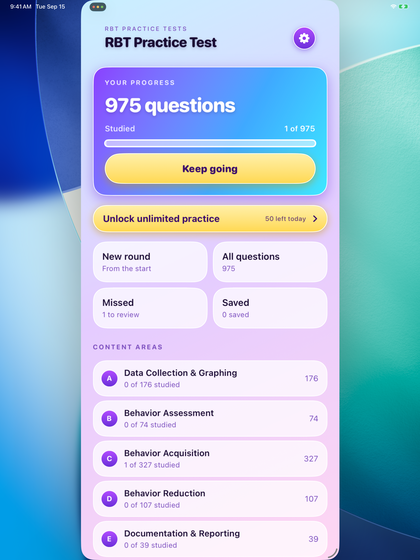
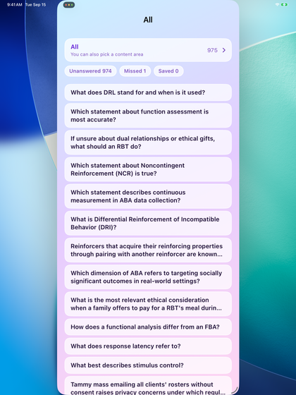
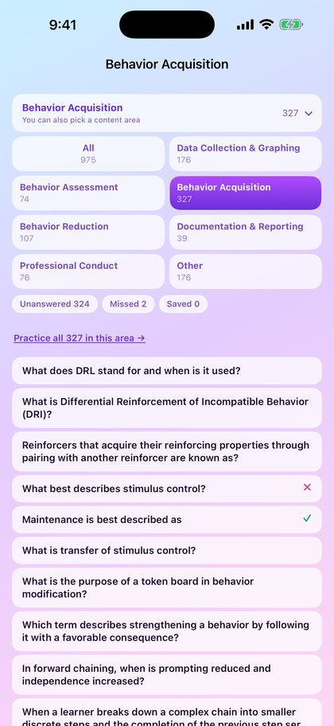
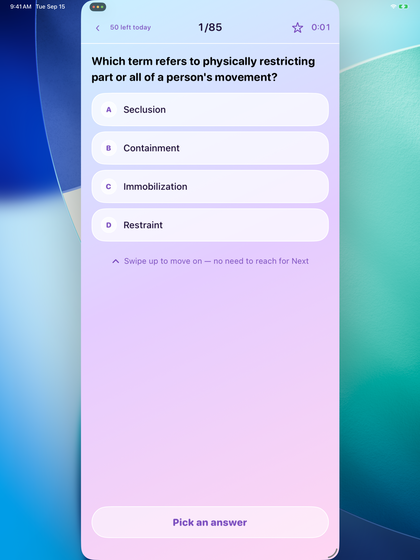
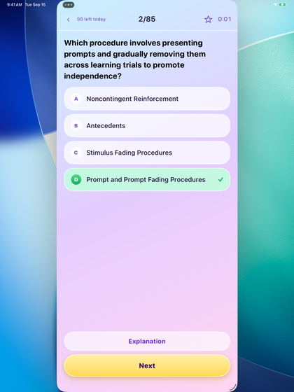
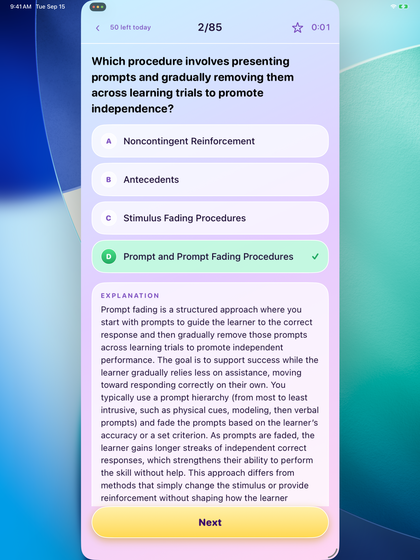
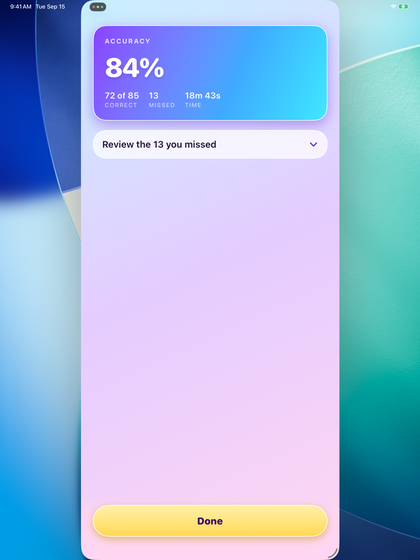
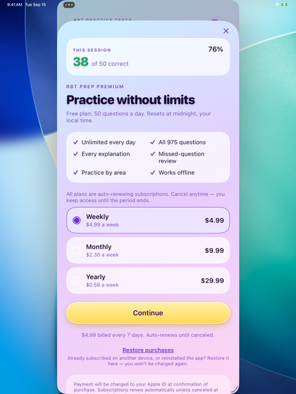
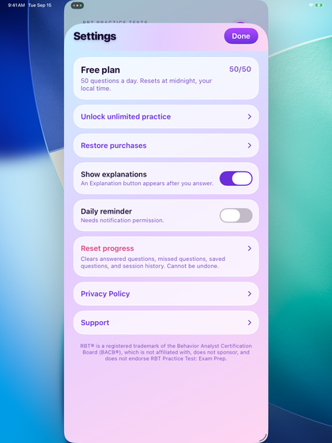

RBT Practice Test: Exam Prep
User Guide · Updated September 15, 2026
This app helps you study for the Registered Behavior Technician (RBT) certification examination. It is an independent study aid.
Everything runs on your device: there is no account, no sign-in, and no internet
connection is needed.
At a glance. 975 multiple-choice questions, each with a
written explanation. 50 questions free every day. A full-length mock exam of
85 questions. Works completely offline. No ads, no tracking.
1. Getting started
Install the app and open it. There is nothing to set up — no account to create,
no email to confirm, no permissions to grant. Every question is already inside the app.
The only optional permission is notifications, and only if you turn on the daily
study reminder yourself in Settings.
2. The home screen

Everything starts here. Progress shows how many of the 975 questions you have answered. The gold bar is the only place that leads to a subscription, and it disappears once you have one. Below it are four shortcuts, then the content areas, then the mock exam.
- Progress — how many of the 975 questions you have answered so far.
- New round — starts again from the first question. This clears your missed
and saved lists; your overall answered progress and mock exam history are kept.
- All questions — browse the whole bank.
- Missed — only the questions you got wrong.
- Saved — the questions you starred.
- Content areas — practise one section at a time (see the table below).
- Mock exam — 85 questions, the same shape as the real test.
- Settings — the gear icon at the top right.
3. Finding questions: areas and filters
Every list in the app — the whole bank, one content area, your missed questions
— is the same screen with a different scope. Two controls sit at the top.

The whole bank. The card at the top shows the current scope and how many questions it holds; tap it to switch to a content area. The three pills below are filters — Unanswered, Missed, Saved — each with a live count, so you can see at a glance how much is left and how much you got wrong.

Tapping that card opens the full list of content areas, each with the number of questions it holds, so you can see the whole outline at once. Pick one and the card collapses to it: the count changes, the filters recount, and a link appears that starts a practice run through the entire area in one go.
The sections follow the RBT Task List, so what you see here matches what you will see
in the official materials:
| Code | Section |
|---|
| A | Data Collection & Graphing |
| B | Behavior Assessment |
| C | Behavior Acquisition |
| D | Behavior Reduction |
| E | Documentation & Reporting |
| F | Professional Conduct |
4. Answering questions

A question before you answer. The top bar carries: back, how many free questions are left today, the section name, your position, the star that saves this question, and elapsed time.

The moment you tap an option it is graded — correct in green, wrong in red. An Explanation button appears; Next moves on.

Every question has a written explanation. This is the part of the app people come back to.
- Tap a section, or any question in a list, to start.
- Tap an option to answer. It is graded immediately — correct in green, wrong in red.
- Tap Explanation to read why that answer is right.
- Swipe up, or tap Next, to move on. When the explanation is open, use
Next — swiping then scrolls the explanation instead.
- The star at the top right saves a question to your Saved list.
Options are shuffled every time you see a question, so you cannot pass by remembering
“the answer is B”.
5. Mock exam

The result screen: score, percentage, time, and every question you missed, each expandable to its explanation.
85 questions drawn proportionally from every section, like the real exam.
Answers are not graded until the end and explanations are hidden during the exam. The
timer records how long you took; it does not cut you off.
At the end you get your score, your percentage, and a list of everything you missed,
each expandable to show the explanation.
6. Free use and subscription
You can answer 50 questions a day for free, for as long as you like. The
count resets at midnight in your own time zone. Every section, every explanation and the
mock exam are reachable within the free allowance.
A subscription removes the daily limit. It does not unlock extra content — all
975 questions are in the app from the start.
| Plan | Price (US) |
|---|
| Weekly | $4.99 |
| Monthly | $9.99 |
| Yearly | $29.99 |

The subscription screen. Three durations, the terms in full, and Restore purchases. It unlocks no extra content — every question is already in the app; it only removes the daily limit.
How to subscribe
- Open Settings (gear icon, top right) and tap Unlock unlimited practice; or
- answer 50 questions in one day, then tap any further question — the
subscription screen appears on its own.
Restore, manage, cancel
Restore purchases is on the subscription screen and in Settings — use it on a
new device or after reinstalling. Subscriptions are billed by Apple, not by us. To cancel,
open Settings in the app and tap Manage subscription, or use the Settings app
on your device: your name → Subscriptions. Cancel at least 24 hours before the period
ends to avoid the next charge; you keep access until the period you paid for is over.
7. Settings

Settings is one flat list. Subscription status sits at the top, then Restore purchases, the study options, and the links.
- Show explanations — whether the explanation appears after each answer.
- Daily reminder — one notification a day at a time you choose.
- Text size — three sizes.
- Reset progress — clears answered, missed and saved questions and your
session history. It cannot be undone, and it does not change your daily free count.
- Privacy Policy and Support.
8. Your data
The app collects nothing and sends nothing anywhere. Which questions you have answered,
which you missed, which you saved and your session history are stored on your device only,
and are deleted with the app. We have no copy and no way to recover them.
The app makes no network requests of its own. There is no analytics, advertising or
tracking, and no third-party components. Purchases are handled by Apple.
9. Questions and problems
If a question looks wrong, tell us the question text and we will check it:
https://admyww.github.io/legal/rbtprep/support.html
Privacy Policy: https://admyww.github.io/legal/rbtprep/privacy.html